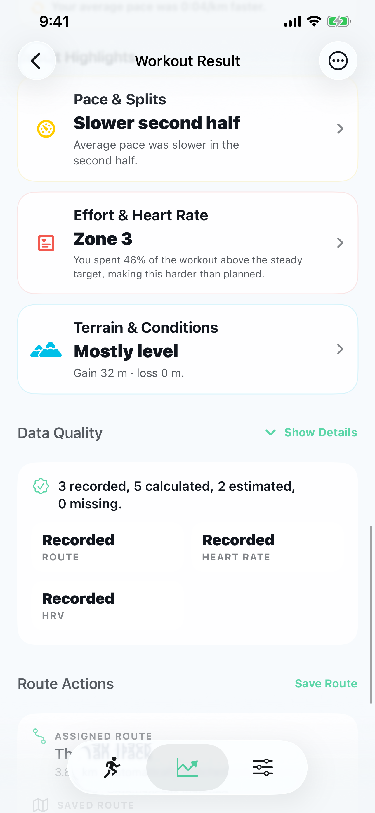

Moisten contact points when required and make sure the device is awake.
Live effort, route context
Bluetooth heart-rate training for iPhone
Connect a compatible monitor for live zones, heart-rate goals and richer insight into how you handled the route.
Live heart-rate zones
See current beats per minute and your active zone while you move.
Effort-aware coaching
Choose an effort goal and receive optional cues when your intensity changes.
Route plus heart rate
Understand whether a route result changed with pace, effort or both.
More than a BPM display
Put effort in the context of the route.
Pace alone cannot always explain a workout. Wind, terrain, fatigue and workout intent can change what the same speed costs. A connected monitor gives Trail IQ another measured signal for interpreting the effort.
1
Guide today's effort
Use personalised or custom zones and select a suitable workout goal.
2
See where intensity changed
Review heart rate over the workout and across route sections.
3
Compare like with like
Add heart-rate context when both same-route workouts contain suitable data.

Compatible BLE monitors
Use the standard Bluetooth heart-rate feed.
Trail IQ scans for monitors that advertise the standard Bluetooth Low Energy Heart Rate service. The Polar H10 has been validated for pairing, live workout heart rate, RR intervals where available and resting heart-rate tests.
In the manufacturer's app, enable Broadcast Heart Rate, HR Sharing or a similarly named setting when required.
In Trail IQ, open Settings, Devices & Health, then Manage Devices and select the monitor.
The start screen monitor control should replace No monitor with the current reading.
During the workout
Make advanced effort guidance easy to follow.
Heart-rate features appear only when a monitor is connected and sending useful data. You choose the goal and how much coaching output you want.
Zones
Know your current intensity
See BPM, zone and the direction needed to return to the selected target.
Goals
Set the purpose of the session
Choose recovery, aerobic, steady or harder effort targets when heart rate is available.
Cues
Keep your eyes on the route
Optional tones, haptics and concise speech can signal meaningful effort changes.
Route
Prepare for what is ahead
Combine the current target with upcoming climbs and learned route sections when reliable evidence exists.
After the workout
See measured data, derived context and what was unavailable.
Trail IQ keeps the source of each result visible. Heart rate is measured by the monitor; zones and workout interpretation are calculated from that data and your settings.
- Average and peak heart rate
- Time in each heart-rate zone
- Heart rate across the route and workout timeline
- Same-route heart-rate comparison when both efforts contain data
- Workout HRV only when compatible beat-to-beat RR intervals were recorded

A clear HRV distinction
Workout HRV needs more than a BPM number.
When a compatible monitor supplies beat-to-beat RR intervals, Trail IQ calculates exercise RMSSD for workout context. Plain heart-rate samples are not enough, and this is not the same measure or setting as Apple Health resting HRV.
The monitor's live heart-rate value during the workout.
Intensity bands based on your heart-rate settings.
Shown only when the monitor provides suitable beat-to-beat data.
Trail IQ does not invent heart-rate or HRV values when they were not recorded.
A complete workout without a monitor
Heart rate adds context. Route tracking works without it.
Without a monitor, Trail IQ still records GPS route, distance, pace or speed, elevation, calories and splits. Heart-rate goals and reports stay hidden when they cannot be supported.
No invented BPM values
No blank heart-rate reports
No medical diagnosis
Route tracking remains available
Understand the cost of the route
Add heart rate when effort matters.
Connect a compatible BLE monitor for live guidance and richer route review, while keeping every heart-rate feature optional.